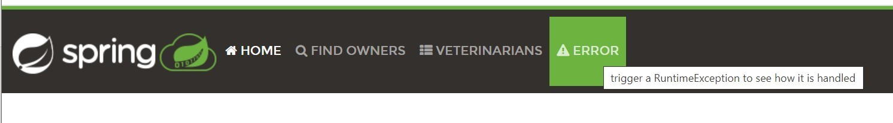
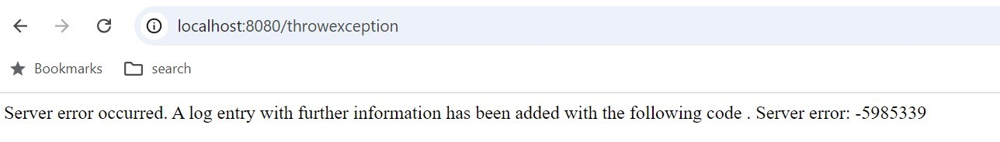

Stacktrace comparison
This compares the stacktraces of Minum and Spring. I have highlighted different sections by package. Note the relative simplicity from Minum.
In Minum's stacktrace, there are three sections. From top to bottom, they are: the business code (1 line), then the Minum framework (6 lines), and finally the base Java code (3 lines).
In comparison, in Spring, there are 10 sections. From top to bottom, they are: the business code (1 line), then a Spring "CrashController" (1 line), then some Java reflection code (2 lines), then 10 lines of Spring framework code, then a single line of Jakarta's code for servlets, then back to Spring for one line, then back to the servlet for a line. Then around 30 lines of Tomcat code, with some Spring Framework middleware (aka filters) sprinkled liberally, then the Coyote processor package, then back to Tomcat for 5 lines, and finally a single line of base Java.
Which all shows that understanding the mechanics in Spring is going to require magnitudes greater research and effort than Minum.
To cause the exception in Spring, I started the Spring Petclinic application and clicked on the Error link. The stacktrace appears as formatted text in the logs.
To cause the exception for Minum, I ran
make run_sampledomainon the command line in the root directory, and then requested a URL with a path of throwexception. The stacktrace appears as a single log line, with formatting escape codes like \n. These values can be replaced to see the original formatting, and tools like Intellij have an "Analyze Stack Trace" feature with a "Normalize" function that can automatically replace these values with formatting. 